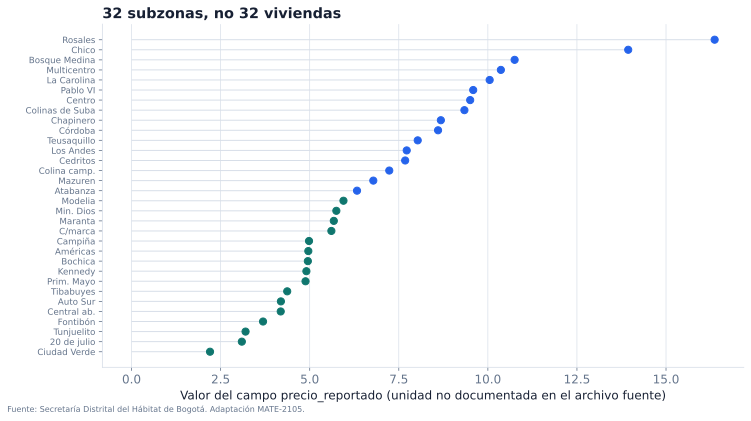

Observaciones, variables y preguntas
Cómo definir los objetos de un problema con datos
Un conjunto de datos no es solamente una colección de números. Cada fila procede de una persona, un objeto, un lugar, un instante o un experimento; cada columna resume una característica registrada mediante algún procedimiento. Antes de elegir un modelo es necesario establecer qué representan esos registros, de qué población proceden y qué preguntas permiten responder.
Este capítulo desarrolla ese trabajo preliminar y define con precisión los objetos que más adelante aparecerán en las fórmulas. Una matriz de diseño, una variable objetivo o una predicción solo tienen sentido después de fijar su interpretación.
Al terminar el capítulo, el lector podrá:
- distinguir unidad de observación, unidad de análisis y nivel de agregación;
- describir una variable mediante su dominio, unidad y procedimiento de medición;
- diferenciar población objetivo, marco de observación y muestra disponible;
- formular preguntas descriptivas, predictivas y causales sin confundir sus alcances;
- traducir una tabla a una representación matemática conservando su significado;
- distinguir una familia de modelos, un algoritmo de ajuste y un modelo ajustado;
- reconocer problemas de cobertura, medición, disponibilidad temporal y calidad de los datos.
Un caso para comenzar
La Secretaría Distrital del Hábitat publica una caracterización de precios de vivienda nueva en Bogotá. Para los ejemplos de este libro se congeló un subconjunto de 32 subzonas y siete columnas. Cinco filas tienen la forma siguiente.
| subzona | precio_reportado | estrato_promedio | area_promedio | alcobas_promedio | banos_promedio | parqueaderos_promedio |
|---|---|---|---|---|---|---|
| Rosales | 16.365 | 5.922 | 177.316 | 2.673 | 3.776 | 2.981 |
| Chicó | 13.939 | 5.905 | 128.044 | 2.225 | 3.105 | 2.152 |
| Bosque Medina | 10.751 | 4.699 | 151.226 | 2.533 | 3.037 | 2.467 |
| Multicentro | 10.365 | 5.647 | 94.071 | 2.086 | 2.625 | 1.786 |
| Centro | 9.504 | 3.195 | 63.383 | 1.744 | 1.799 | 0.988 |
La tabla puede leerse de varias maneras equivocadas. Una fila no representa una vivienda, sino una subzona. Las columnas numéricas son promedios o indicadores de esa subzona, no mediciones individuales. Además, el archivo fuente llama precios a una de las columnas, pero no documenta su unidad en el recurso descargado. Por esta razón usamos el nombre precio_reportado y no afirmamos que la cifra esté expresada en pesos, millones de pesos o precio por metro cuadrado.

La figura permite comparar el orden y la dispersión del indicador dentro de las 32 filas. No permite valorar una vivienda particular ni completar una unidad de medida ausente. Esta diferencia entre lo que muestran los datos y lo que quisiéramos saber será recurrente a lo largo del libro.
Unidades de observación y niveles de análisis
Unidad de observación. La unidad de observación es la entidad, evento o intervalo representado por un registro. Puede ser una persona, una transacción, una imagen, una subzona, un paciente en una visita o el resultado de un experimento.
La descripción de la unidad debe incluir más que un sustantivo. También interesa el periodo de registro, el lugar, los criterios de inclusión y el procedimiento que produjo la fila. “Paciente” y “visita de un paciente” definen unidades distintas. Si una misma persona aparece en cinco visitas, las cinco filas no constituyen cinco personas independientes.
La unidad de análisis es la entidad sobre la cual se formula la conclusión. Con frecuencia coincide con la unidad de observación, pero no siempre. Una tabla puede registrar transacciones y utilizarse para estudiar comercios; puede registrar estudiantes y utilizarse para comparar colegios; puede registrar subzonas y pretender describir viviendas. Cuando las unidades no coinciden, es necesario especificar cómo se agregan los registros y qué información se pierde.
Ejemplo 1: registros hospitalarios. Un archivo contiene una fila por consulta. La pregunta “¿qué consultas terminarán en hospitalización?” tiene la consulta como unidad de observación y de análisis. La pregunta “¿qué pacientes tendrán al menos una hospitalización durante el año?” exige agrupar consultas por paciente y fijar un intervalo temporal. Usar cada consulta como si fuera un paciente alteraría el denominador y podría colocar consultas de una misma persona en conjuntos distintos.
Identificadores y repetición
Un identificador permite reconocer la unidad registrada. No siempre es una variable útil para predecir. Un número de documento puede ser indispensable para detectar duplicados y, al mismo tiempo, ser inadecuado como entrada de un modelo.
Conviene distinguir:
- identificador de registro, que diferencia filas;
- identificador de unidad, que permite reconocer observaciones repetidas de la misma entidad;
- identificador de grupo, que señala hospital, colegio, región o dispositivo;
- marca temporal, que sitúa la observación y permite reconstruir el orden.
Estas columnas determinan dependencias que no se ven en una matriz numérica. Más adelante condicionarán la manera de construir muestras de entrenamiento y evaluación.
Agregación y falacia ecológica
En la tabla de Bogotá, area_promedio es un resumen de subzona. Una relación entre area_promedio y precio_reportado describe asociaciones entre subzonas. No se deduce de ella la relación correspondiente entre viviendas dentro de cada subzona.
Inferir un comportamiento individual a partir de datos agregados se conoce como falacia ecológica. El problema no se resuelve aumentando el número de subzonas: la información individual fue reemplazada por resúmenes. Tampoco puede recuperarse la variación interna de cada grupo a partir de un promedio aislado.
Ejemplo 2: dos subzonas con el mismo promedio. En una subzona, las áreas de dos viviendas pueden ser 80 y 120 metros cuadrados; en otra, 99 y 101. Ambas tienen promedio 100, pero su variación interna es diferente. Una tabla que conserva solo el promedio no permite distinguirlas.
Variables, valores y mediciones
Variable. Una variable es una característica que puede tomar distintos valores en las unidades consideradas. Su definición incluye un dominio de valores posibles y una regla, explícita o implícita, para asignar un valor a cada unidad.
Una columna es la representación computacional de los valores registrados para una variable. Variable y columna no son sinónimos perfectos. Una variable puede requerir varias columnas, como una fecha separada en año, mes y día; una columna puede ser un identificador técnico sin interpretación sustantiva; y una variable no observada directamente puede construirse a partir de otras mediciones.
Dominio y tipo de variable
El dominio describe qué valores admite una variable. Algunas categorías útiles son:
| Tipo conceptual | Ejemplo | Operaciones con sentido |
|---|---|---|
| binaria | hospitalización: sí/no | proporción, comparación de categorías |
| categórica nominal | localidad | igualdad, conteos, frecuencias |
| categórica ordinal | nivel bajo/medio/alto | orden y comparaciones ordinales |
| conteo | número de visitas | suma, diferencia, razón bajo condiciones |
| continua | área construida | diferencias, promedios, transformaciones |
| temporal | fecha de venta | orden, duración, estacionalidad |
| texto, imagen o señal | descripción, radiografía, audio | representación específica del objeto |
El tipo almacenado por un programa no decide el tipo conceptual. Un código postal puede aparecer como entero y seguir siendo categórico; convertirlo a float no hace razonable promediarlo. De forma inversa, un número guardado como texto puede representar una medición continua que necesita limpieza.
Escala y unidad
La unidad determina la interpretación de diferencias y proporciones. Una longitud en metros y la misma longitud en centímetros contienen la misma información, pero producen coeficientes numéricos diferentes. Una temperatura en grados Celsius admite diferencias con sentido, aunque la razón “20 es el doble de 10” no tenga la interpretación física usual de una escala con cero absoluto.
Por ello, antes de calcular conviene registrar:
- definición de la variable;
- unidad y escala;
- instante o periodo al que se refiere;
- instrumento o fuente;
- transformaciones aplicadas;
- códigos especiales y valores faltantes.
Medición y construcción
No toda variable es observada de manera directa. “Ingreso mensual” puede proceder de una declaración, un registro tributario o una imputación. “Satisfacción” puede ser la respuesta a una escala. “Riesgo” puede ser un índice construido a partir de varias columnas. Cada procedimiento define un objeto diferente, aunque los nombres se parezcan.
Procedimiento de medición. Es la regla mediante la cual una propiedad de una unidad se transforma en un valor registrado. Incluye instrumento, protocolo, momento, resolución, redondeo y tratamiento de casos no observables.
El error de medición es la diferencia entre el valor registrado y la cantidad que se pretendía medir. No es lo mismo que un residual de un modelo, que se calcula después de comparar una observación con una predicción. La distinción se retomará al estudiar modelos probabilísticos.
Datos faltantes
Un valor faltante no es necesariamente cero y tampoco constituye una categoría ordinaria. Puede faltar porque la medición no aplica, porque no se realizó, porque el participante no respondió o porque el sistema perdió el registro. Esas causas pueden contener información.
Antes de imputar o eliminar filas deben responderse al menos tres preguntas:
- ¿qué significa la ausencia en esta variable?;
- ¿puede conocerse la causa con las demás columnas?;
- ¿cambia la frecuencia de ausencia entre grupos, periodos o valores del resultado?
La teoría estadística de los mecanismos de ausencia requiere supuestos adicionales. En esta etapa basta con no ocultar la ausencia bajo una transformación automática.
El diccionario de datos
Un diccionario de datos conserva el significado que se pierde al convertir una tabla en un arreglo. Para cada columna debería indicar, cuando corresponda:
| Campo | Pregunta que debe responder |
|---|---|
| nombre | ¿cómo se identifica en el archivo? |
| descripción | ¿qué propiedad representa? |
| dominio | ¿qué valores son admisibles? |
| unidad | ¿en qué escala se expresa? |
| procedencia | ¿qué sistema o instrumento la produjo? |
| disponibilidad | ¿en qué momento se conoce? |
| transformación | ¿es original, agregada o derivada? |
| faltantes | ¿qué códigos y causas de ausencia existen? |
Para el subconjunto de Bogotá puede escribirse un diccionario parcial:
| variable | papel | interpretación disponible | limitación principal |
|---|---|---|---|
subzona |
identificador | nombre de la subzona | no identifica viviendas |
precio_reportado |
posible salida | indicador llamado precios en la fuente |
unidad no documentada |
estrato_promedio |
entrada | promedio reportado por subzona | oculta variación interna |
area_promedio |
entrada | área promedio reportada | tipo de área no documentado aquí |
alcobas_promedio |
entrada | promedio de alcobas | no es conteo de una vivienda |
banos_promedio |
entrada | promedio de baños | no es conteo de una vivienda |
parqueaderos_promedio |
entrada | promedio de parqueaderos | no es conteo de una vivienda |
Este diccionario no completa información ausente. Su valor consiste precisamente en separar lo conocido de lo supuesto.
Población, marco de observación y muestra
Una tabla contiene unidades observadas. Para interpretar una conclusión también debemos precisar el conjunto más amplio al que se refiere.
Población objetivo. Es el conjunto de unidades, lugares y periodos sobre los que se desea formular una conclusión.
Marco de observación. Es el conjunto de unidades que el procedimiento de recolección podía identificar o incluir. Puede ser más pequeño o diferente de la población objetivo.
Muestra observada. Es el conjunto de unidades del marco que finalmente aparece en los datos después de aplicar criterios de inclusión, respuesta, disponibilidad y limpieza.
Estas tres colecciones pueden diferir. Si la población objetivo son todos los hogares de una ciudad y el marco contiene solo hogares con conexión fija a internet, ningún tamaño de muestra dentro de ese marco incluye a quienes quedaron fuera. El problema es de cobertura, no de precisión numérica.
La relación puede resumirse así:
\[ \text{población objetivo} \longrightarrow \text{marco de observación} \longrightarrow \text{muestra registrada} \longrightarrow \text{tabla analizada}. \]
Cada flecha corresponde a un mecanismo: cobertura, selección, respuesta, medición o procesamiento. Una conclusión sobre la población requiere que esos mecanismos sean compatibles con la comparación que se pretende realizar.
Un censo también tiene alcance limitado
Observar todas las unidades de un marco en un instante elimina el error asociado a seleccionar solo algunas de ellas, pero no resuelve otros problemas. El marco puede excluir unidades, las mediciones pueden contener errores y la población futura puede cambiar. Un “censo” de transacciones de 2025 sigue siendo una muestra de los periodos posibles si la pregunta se refiere a 2026.
¿Qué población corresponde al caso de Bogotá?
La respuesta depende de la pregunta. Podríamos interesarnos por las 32 subzonas en el periodo documentado, por todas las subzonas de Bogotá, por proyectos de vivienda nueva o por viviendas particulares. La tabla no convierte automáticamente una de estas opciones en población objetivo. Además, no conocemos aquí el mecanismo de selección de las 32 subzonas ni la unidad del indicador. Por ello, el caso sirve para estudiar asociaciones entre los resúmenes disponibles, no para valorar viviendas individuales ni para describir sin reservas toda la ciudad.
El capítulo siguiente representará muestras y poblaciones mediante distribuciones de probabilidad. Esa formalización no reemplaza la descripción del marco: primero debe quedar claro de qué proceso podría ser muestra la tabla.
De una pregunta amplia a una pregunta precisa
“Analizar vivienda en Bogotá” expresa un tema, pero no una pregunta matemática. Una pregunta precisa debe indicar qué unidad se estudia, qué cantidad se quiere obtener y a qué población se refiere.
Preguntas descriptivas
Una pregunta descriptiva resume lo observado:
¿Cómo se distribuye
precio_reportadoentre las 32 subzonas del archivo?
La respuesta puede incluir tablas, gráficos, medias o cuantiles. Su alcance inmediato son las filas observadas. Extenderla a otras subzonas o periodos exige un argumento adicional sobre la manera en que se obtuvo la muestra.
Preguntas predictivas
Una pregunta predictiva busca anticipar un resultado que no estará disponible en el momento de aplicar la regla. Conviene especificar cinco elementos:
- unidad: ¿para qué tipo de caso se produce la predicción?;
- salida: ¿qué valor o categoría se quiere anticipar?;
- momento: ¿cuándo se realiza la predicción y para qué horizonte?;
- información disponible: ¿qué variables se conocen en ese instante?;
- población de uso: ¿sobre qué casos se aplicará el procedimiento?
Una formulación compatible con el ejemplo sería:
Para una subzona descrita por los promedios disponibles, estimar el indicador
precio_reportadoy evaluar el procedimiento en subzonas comparables que no participaron en el ajuste.
Esta formulación no promete valorar viviendas ni explicar por qué cambia el indicador.
Preguntas causales
Una pregunta causal se refiere al efecto de una intervención o exposición:
¿Cómo cambiaría el resultado si, manteniendo lo demás apropiadamente comparable, se modificara una condición determinada?
Una asociación útil para predecir no identifica por sí sola ese efecto. Si estrato_promedio y precio_reportado cambian juntos, un modelo puede aprovechar la asociación sin que una modificación administrativa del estrato produzca el cambio predicho. Para sostener una afirmación causal se necesita definir la intervención, establecer qué comparación la representa y justificar supuestos sobre asignación, confusión y medición.
Una misma tabla admite preguntas diferentes
El conjunto load_wine de scikit-learn contiene mediciones químicas de vinos y tres clases de cultivar. La misma tabla permite formular, entre otras, estas preguntas:
- describir la distribución de una concentración en la muestra;
- predecir la clase de cultivar a partir de las mediciones;
- estimar una concentración continua usando las demás variables;
- explorar una representación de baja dimensión sin escoger una salida.
La tabla no determina por sí sola la tarea. El papel de una columna depende de la pregunta. Una variable puede ser entrada en un análisis y salida en otro.
Familias de tareas
Una vez definida la pregunta, la forma de la salida orienta la familia de métodos.
| Pregunta | Salida matemática | Familia habitual |
|---|---|---|
| estimar una cantidad | número real | regresión |
| asignar una categoría | elemento de un conjunto finito | clasificación |
| estimar una probabilidad | vector de probabilidades | clasificación probabilística |
| ordenar alternativas | puntaje u orden | ranking y recomendación |
| representar estructura sin salida | coordenadas, grupos o factores | aprendizaje no supervisado |
| estimar efecto de una intervención | contraste entre resultados potenciales | inferencia causal |
Las fronteras no siempre son absolutas. Una variable ordinal puede tratarse como categoría o como valor ordenado; un conteo puede modelarse mediante regresión con una distribución específica; una probabilidad estimada puede convertirse en una decisión después de fijar costos y umbrales. La elección debe corresponder al significado de la salida, no únicamente al tipo almacenado en el archivo.
De la tabla a la notación matemática
Sea una tabla con \(m\) registros. Denotamos el registro observado en la fila \(i\) por
\[ z_i=(z_{i1},\ldots,z_{ip}), \]
donde cada coordenada representa una variable registrada. La colección ordenada de registros es
\[ d_m=(z_1,\ldots,z_m). \]
Usamos aquí letras minúsculas porque los valores ya fueron observados. En el capítulo siguiente introduciremos las variables aleatorias \(Z_i\) y reservaremos \(D_m=(Z_1,\ldots,Z_m)\) para la muestra antes de observarla.
Problemas supervisados
Si una variable cumple el papel de salida, escribimos
\[ z_i=(x_i,y_i), \]
donde \(x_i\) reúne la información de entrada y \(y_i\) es el resultado observado. Cuando todas las entradas son numéricas y tienen una representación de dimensión \(d\), se organizan como
\[ X= \begin{bmatrix} x_1^\top\\ \vdots\\ x_m^\top \end{bmatrix} \in\mathbb R^{m\times d}, \qquad y= \begin{bmatrix} y_1\\ \vdots\\ y_m \end{bmatrix}. \]
La fila \(i\) de \(X\) y la entrada \(i\) de \(y\) deben referirse a la misma unidad. La forma de los arreglos es parte del contrato matemático:
- \(m\) es el número de observaciones;
- \(d\) es el número de características después de la representación;
- \(x_i\in\mathbb R^d\) describe una observación;
- \(y_i\) pertenece al espacio de salidas, que puede ser \(\mathbb R\), un conjunto de clases u otro dominio.
Para el caso de Bogotá podríamos seleccionar cinco entradas:
features = [
"estrato_promedio",
"area_promedio",
"alcobas_promedio",
"banos_promedio",
"parqueaderos_promedio",
]
X = tabla[features]
y = tabla["precio_reportado"]
assert X.shape == (32, 5)
assert y.shape == (32,)Tabla original y matriz de diseño
No toda tabla puede introducirse directamente en \(\mathbb R^{m\times d}\). Las categorías necesitan una codificación; las fechas pueden transformarse en duraciones o componentes estacionales; el texto y las imágenes requieren una representación; los valores faltantes necesitan un tratamiento explícito.
Podemos escribir una transformación de características como
\[ \phi:\mathcal X_{\mathrm{raw}}\longrightarrow\mathbb R^d, \qquad x_i=\phi(x_i^{\mathrm{raw}}). \]
La matriz formada por los vectores \(\phi(x_i^{\mathrm{raw}})\) es una matriz de diseño. La transformación \(\phi\) puede estar completamente fijada de antemano o contener cantidades aprendidas de los datos, como medias para estandarizar o categorías observadas. En el segundo caso, su ajuste forma parte del procedimiento estadístico y debe realizarse sin consultar observaciones reservadas.
Al convertir una tabla a numpy, los valores y las dimensiones permanecen, pero pueden desaparecer nombres, unidades, identificadores y fechas. La representación numérica debe acompañarse de un diccionario y de las reglas que produjeron cada columna.
Modelo, algoritmo y resultado ajustado
En este libro un modelo predictivo es una familia de funciones
\[ \mathcal F=\{f_\theta:\theta\in\Theta\}, \qquad f_\theta:\mathcal X\longrightarrow\mathcal Y. \]
El parámetro \(\theta\) identifica una función dentro de la familia. Por ejemplo, en una familia lineal,
\[ f_{\beta_0,\beta}(x)=\beta_0+x^\top\beta, \]
los parámetros son el intercepto \(\beta_0\) y el vector de coeficientes \(\beta\).
Un algoritmo de ajuste recibe datos y produce parámetros. Si lo denotamos por \(A\), entonces
\[ A(d_{\mathrm{train}})=\widehat\theta. \]
La función \(f_{\widehat\theta}\) es el modelo ajustado. Para una entrada nueva \(x\) produce
\[ \widehat y=f_{\widehat\theta}(x). \]
Estos objetos no deben confundirse:
| Objeto | Ejemplo | Qué lo determina |
|---|---|---|
| familia de modelos | funciones lineales | decisión de modelación |
| parámetro | coeficientes \(\beta\) | algoritmo y datos de ajuste |
| hiperparámetro | intensidad de regularización | procedimiento de selección |
| modelo ajustado | \(f_{\widehat\theta}\) | familia, algoritmo y muestra |
| predicción | \(f_{\widehat\theta}(x)\) | modelo ajustado y entrada nueva |
Un hiperparámetro controla la familia o el algoritmo, pero no se obtiene en el ajuste ordinario de parámetros. Su elección también utiliza datos y, por tanto, debe incluirse al describir el procedimiento completo.
Ajustar y aplicar son operaciones distintas
Durante el ajuste,
\[ d_{\mathrm{train}}\longmapsto\widehat\theta. \]
Durante la aplicación,
\[ x_{\mathrm{nuevo}}\longmapsto f_{\widehat\theta}(x_{\mathrm{nuevo}}), \]
con \(\widehat\theta\) ya fijado. Esta distinción permite preguntar qué información estaba disponible en cada momento. Si una variable solo se conoce después del resultado, no puede formar parte de \(x_{\mathrm{nuevo}}\) en un sistema que intenta anticiparlo.
Disponibilidad temporal y filtración de información
Para cada variable predictora conviene registrar un tiempo de disponibilidad. Si \(t_0\) es el momento de predicción, una entrada válida debe estar disponible en \(t_0\) bajo las condiciones reales de uso.
Filtración de información. Hay filtración, o data leakage, cuando el procedimiento utiliza para ajustar, seleccionar o representar un caso información que no estaría disponible en el momento de uso o que pertenece a observaciones reservadas para evaluación.
Ejemplos frecuentes son:
- predecir hospitalización con un código registrado al dar de alta;
- predecir fraude con el resultado de la investigación posterior;
- calcular una media de estandarización con toda la tabla antes de separar datos;
- imputar faltantes utilizando observaciones reservadas;
- permitir que registros de una misma persona aparezcan a ambos lados de una partición que pretende evaluar personas nuevas.
Una transformación determinista fijada de antemano, como elevar una medición al cuadrado, no consulta otras filas. En cambio, una transformación que estima medias, categorías, componentes principales o variables seleccionadas aprende de la muestra y debe tratarse como parte del algoritmo \(A\).
Calidad de datos como propiedad de la pregunta
La calidad no es una propiedad absoluta del archivo. Una columna puede ser suficiente para una descripción agregada e insuficiente para una predicción individual. Por eso la revisión debe relacionarse con la pregunta.
| Dimensión | Pregunta de revisión |
|---|---|
| cobertura | ¿qué unidades de la población no podían aparecer? |
| selección | ¿por qué unas unidades quedaron incluidas y otras no? |
| medición | ¿qué se midió y con qué precisión? |
| completitud | ¿qué valores faltan y por qué? |
| unicidad | ¿hay duplicados o registros repetidos legítimos? |
| consistencia | ¿las definiciones se mantienen entre fuentes y periodos? |
| temporalidad | ¿cada variable estaba disponible al producir la salida? |
| granularidad | ¿la unidad registrada coincide con la unidad de la pregunta? |
| trazabilidad | ¿puede reconstruirse la transformación desde la fuente? |
La revisión establece qué afirmaciones admite un conjunto de datos para la pregunta formulada y cuáles requerirían información diferente.
Análisis completo del caso de Bogotá
Podemos ahora describir el ejemplo sin atribuirle información que no contiene.
Unidad de observación. Una subzona de Bogotá resumida por la fuente.
Nivel de agregación. Cada fila contiene promedios o indicadores de la subzona; no hay registros de viviendas individuales.
Muestra disponible. Un subconjunto congelado de 32 subzonas. El archivo del libro conserva la fuente y las transformaciones en un manifiesto, pero no completa la unidad ausente de precio_reportado.
Pregunta descriptiva admisible. Comparar los valores registrados y las asociaciones entre columnas dentro de las 32 subzonas.
Pregunta predictiva posible. Estudiar si los promedios disponibles contienen información para anticipar precio_reportado en subzonas comparables, declarando que el tamaño es pequeño y que la población de uso debe justificarse.
Afirmaciones no sustentadas. Valorar una vivienda, interpretar el coeficiente como efecto causal, asignar una unidad al indicador o generalizar automáticamente a todos los proyectos de la ciudad.
El archivo puede inspeccionarse con:
import pandas as pd
ruta = "datos/vivienda_nueva_bogota_subzonas.csv"
tabla = pd.read_csv(ruta)
print(tabla.shape)
print(tabla.dtypes)
print(tabla.isna().sum())
print(tabla.head())Estas operaciones verifican forma, tipos computacionales y faltantes. No verifican por sí solas la interpretación. Para ello siguen siendo necesarios la ficha de la fuente, el diccionario de datos y el análisis de la unidad de observación.
Una ficha mínima para iniciar un análisis
Antes de ajustar un modelo resulta útil escribir una ficha breve:
- Fuente y versión: procedencia, fecha de descarga y licencia.
- Unidad de observación: qué representa una fila y cómo se identifica.
- Población objetivo: dónde y cuándo se quiere aplicar la conclusión.
- Marco y selección: qué unidades podían aparecer y cómo fueron incluidas.
- Variables: significado, dominio, unidad y tiempo de disponibilidad.
- Pregunta: descriptiva, predictiva o causal; salida y uso previsto.
- Representación: cómo se transformará la tabla en objetos matemáticos.
- Limitaciones iniciales: información ausente, agregación, medición y posibles dependencias.
Esta ficha no reemplaza el análisis exploratorio. Evita que el análisis comience con objetos mal definidos y ofrece un punto de referencia cuando cambian las decisiones de modelación.
Síntesis
Una fila representa una unidad registrada mediante un procedimiento concreto. La unidad puede diferir de aquella sobre la que se desea concluir, especialmente en datos repetidos o agregados. Una columna representa valores observados de una variable, pero su nombre y su tipo computacional no sustituyen la definición, la unidad ni el mecanismo de medición.
La muestra disponible procede de un marco de observación y este puede diferir de la población objetivo. Cobertura, selección, medición y tiempo determinan el alcance de los datos. Una pregunta descriptiva resume lo observado; una pregunta predictiva anticipa una salida para casos de uso definidos; una pregunta causal compara intervenciones y requiere supuestos adicionales.
La traducción matemática organiza los registros como \(d_m=(z_1,\ldots,z_m)\) y, en un problema supervisado, como pares \((x_i,y_i)\). Una familia de modelos \(\{f_\theta\}\), un algoritmo de ajuste \(A\) y un modelo ajustado \(f_{\widehat\theta}\) son objetos diferentes. Esta separación será esencial cuando la muestra misma se represente como aleatoria y se estudie la variación de los resultados obtenidos a partir de ella.
Términos clave
- Unidad de observación: entidad, evento o intervalo representado por una fila.
- Unidad de análisis: entidad sobre la que se formula la conclusión.
- Nivel de agregación: escala a la que se resumen o registran los datos.
- Variable: característica con un dominio de valores y una regla de medición.
- Procedimiento de medición: mecanismo que produce un valor registrado.
- Población objetivo: conjunto sobre el que se desea concluir.
- Marco de observación: unidades que podían ser identificadas por la recolección.
- Muestra observada: unidades que finalmente aparecen en la tabla analizada.
- Matriz de diseño: representación numérica de las entradas de un problema.
- Parámetro: cantidad que identifica una función dentro de una familia de modelos.
- Hiperparámetro: configuración del modelo o algoritmo elegida por un procedimiento de selección.
- Filtración de información: uso de información no disponible en el momento o la muestra apropiados.
Ejercicios
Comprensión conceptual
Un archivo de transporte contiene una fila por validación de tarjeta. Proponga una pregunta cuya unidad de análisis sea la validación y otra cuya unidad sea la persona. ¿Qué identificadores necesitaría para la segunda?
Explique por qué 32 promedios de subzona no equivalen a 32 mediciones de viviendas. Construya dos conjuntos de valores individuales con el mismo promedio y distinta variación.
Dé un ejemplo en el que el tipo
intde una columna no corresponda a una variable cuantitativa. Indique qué operaciones carecerían de sentido.Distinga población objetivo, marco de observación y muestra en una encuesta enviada por correo institucional a estudiantes matriculados.
Explique por qué un censo de todas las ventas realizadas durante un mes puede seguir siendo insuficiente para una pregunta sobre ventas del año siguiente.
Formule sobre un mismo conjunto de datos una pregunta descriptiva, una predictiva y una causal. Identifique qué información adicional exige cada una.
¿Por qué el papel de “variable objetivo” no es una propiedad permanente de una columna?
Distinga familia de modelos, algoritmo de ajuste, parámetro, hiperparámetro y predicción mediante un ejemplo de regresión.
Representación y cálculo
Una tabla contiene 240 pacientes, 12 variables numéricas, 3 variables categóricas y una salida binaria. Si cada variable categórica se codifica con 4 columnas indicadoras, ¿cuál es la dimensión de la matriz de diseño sin contar intercepto? Declare cualquier supuesto necesario.
Escriba explícitamente la matriz \(X\) y el vector \(y\) para las observaciones \((x_1,y_1)=((1,2),5)\), \((x_2,y_2)=((0,3),4)\) y \((x_3,y_3)=((-1,1),0)\). Indique las dimensiones.
Una tabla registra 800 visitas de 300 pacientes. Explique por qué una partición de filas puede colocar información de un mismo paciente en ajuste y evaluación. Proponga una unidad apropiada para formar los grupos.
Para una variable de fecha \(t\), proponga una transformación \(\phi(t)\) que represente mes y día de la semana. Indique qué información se conserva y cuál se pierde.
Considere \(f_{\beta_0,\beta}(x)=\beta_0+x^\top\beta\) con \(x\in\mathbb R^5\). ¿Cuántos parámetros escalares tiene el modelo? ¿Cambia ese número si hay 32 o 3200 observaciones?
Una variable se expresa primero en metros y luego en centímetros. Explique cómo cambia su columna y por qué la realidad medida no cambia. Anticipe qué ocurriría con el coeficiente de una regresión lineal que utiliza esa variable.
Datos y código
Cargue el CSV de Bogotá. Verifique forma, nombres, tipos y faltantes. Produzca un diccionario de datos en una tabla separada; no complete unidades que la fuente no documenta.
Busque duplicados en
subzona. Explique qué significaría encontrar uno y qué información necesitaría antes de eliminarlo.Escriba una función que reciba una tabla, una lista de predictores y una salida, y verifique que las columnas existen, que la salida no está entre los predictores y que \(X\) y \(y\) tienen el mismo número de filas.
Con
load_wine, identifique unidad de observación, salida, número de entradas y dominio de cada tipo de variable. Formule dos preguntas distintas que usen la misma tabla.Construya un ejemplo pequeño donde una categoría nueva aparezca después de haber definido una codificación. Explique por qué la transformación debe especificar cómo tratar categorías desconocidas.
Análisis y formulación
Un hospital quiere predecir reingreso a 30 días. Para cada una de estas variables, determine si estaría disponible al momento del alta: diagnóstico inicial, medicación de alta, número de llamadas posteriores y código del reingreso. Justifique.
Una aplicación recoge datos solo de usuarios que aceptan compartir su ubicación. Describa la población objetivo, el marco observado y una posible diferencia sistemática entre usuarios incluidos y excluidos.
Redacte una pregunta predictiva completa para un problema de su interés. Debe indicar unidad, salida, momento, información disponible y población de uso.
Para el caso de Bogotá, escriba dos conclusiones admisibles y dos conclusiones que excedan la información disponible. Señale exactamente qué dato o supuesto falta en cada caso.
Prepare la ficha mínima de un conjunto de datos que considere para un proyecto. Identifique al menos una limitación de cobertura, una de medición y una de temporalidad.
Respuestas seleccionadas
2. Los conjuntos \((80,120)\) y \((99,101)\) tienen promedio 100, pero el primero presenta mucha mayor dispersión. El promedio no permite reconstruir la distribución interna de una subzona.
4. La población objetivo podría ser todo el estudiantado sobre el que se desea concluir. El marco contiene estudiantes matriculados con correo institucional activo. La muestra observada contiene quienes recibieron y respondieron la encuesta. Cada transición puede excluir unidades diferentes.
9. Bajo el supuesto de cuatro columnas por cada una de las tres variables categóricas, la dimensión es \(240\times(12+3\cdot4)=240\times24\). Si se elimina una categoría de referencia por variable, la dimensión cambia a \(240\times21\).
10.
\[ X= \begin{bmatrix} 1&2\\ 0&3\\ -1&1 \end{bmatrix}\in\mathbb R^{3\times2}, \qquad y= \begin{bmatrix} 5\\4\\0 \end{bmatrix}\in\mathbb R^3. \]
13. El intercepto aporta un parámetro y \(\beta\in\mathbb R^5\) aporta cinco; hay seis parámetros escalares. El número no depende del tamaño de muestra, aunque la información disponible para estimarlos sí cambia.
20. El diagnóstico inicial y la medicación de alta pueden estar disponibles al alta si el sistema los registra a tiempo. Las llamadas posteriores y el código de reingreso ocurren después y producirían filtración para una predicción realizada al alta.